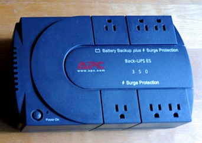

This lesson covers the basic procedures and safety precautions with which technicians must be competent and comfortable before working on various PC hardware. First we will discuss the hazards of computer systems and tools, including electricity, electrostatic discharge (ESD), chemicals, and other dangers that can hurt you when you are working on the various forms of computer hardware. We will also cover the safety measures and procedures that you must employ to minimize risk, such as using ESD straps, ESD mats, self-grounding systems, and equipment grounding. We will then discuss personal safety, including removal of jewelry to protect yourself and computers, proper lifting techniques and weight limitations, and removal of electrical power. Finally, we will cover electrical fire safety, cathode ray tube (CRT) safety and disposal, cable management, and local government regulation compliance.
本課程涵蓋了基本程序和安全預防措施，技術人員在使用各種PC硬件之前必須具備一定的能力和舒適度。首先，我們將討論計算機系統和工具的危害，包括電，靜電釋放（ESD），化學物質以及在使用各種形式的計算機硬件時可能傷害您的其他危害。我們還將介紹必須使用的安全措施和規程，以最大程度地降低風險，例如使用ESD帶，ESD墊，自接地系統和設備接地。然後，我們將討論人身安全，包括為保護自己和計算機而移走珠寶，適當的舉陞技術和重量限制以及移去電源。最後，我們將介紹電氣消防安全，
PCH 2 - Operational Procedures: Electrical Safety (操作程序：電氣安全) P.20
Electricity is a significant hazard in working with computer systems and tools. Electricity is required to make workstations operate, but if you are not careful, electricity can cause serious injury to you and major damage to the computer you are working on.
電力是使用計算機系統和工具的重大危險。要使工作站正常工作，需要通電，但是如果不小心，電流可能會對您造成嚴重傷害，並嚴重損壞您正在使用的計算機。
With regard to human injury, technicians can receive an electrical shock from computers or electrical outlets if special care is not taken when working with them. It is important to check all the power outlets to ensure they are working properly. When checking the outlets, you should verify that the outlet is providing the correct amount of power. If you are working in the United States, then you should expect to receive a voltage of 115 VAC to 120 VAC (volts of alternating current) from the power outlets in an office or home. This can be verified using a simple three-prong tester, voltmeter, or multimeter. Procedurally, you must never pull the cords out by the wires, as this can cause damage and fraying of the cables. Instead, you should plug in and remove cables by the plug on the end of the cord. It is important that you never use a frayed or damaged power cable.
關於人身傷害，如果在操作計算機或電源插座時未特別注意，則技術人員可能會從計算機或電源插座中遭受電擊。檢查所有電源插座以確保它們正常工作很重要。檢查插座時，應驗證插座是否提供了正確的電量。如果您在美國工作，則應該期望從辦公室或家庭的電源插座接收115 VAC至120 VAC（交流電壓）的電壓。可以使用簡單的三叉測試儀，電壓表或萬用表進行驗證。程序上，切勿將電線從電線中拉出，因為這會導致電纜損壞和磨損。相反，您應該插入插頭並通過電源線末端的插頭拔出電纜。
In addition to keeping themselves safe, technicians need to keep computers safe from electrical damage. It is common to use a surge protector to protect computers from power spikes or surges. A power strip is not the same thing as a surge protector. Surge protectors are rated in joules (J), a unit of energy. The rating indicates the number of joules the surge protector can absorb before failure. A higher rating indicates greater protection for the computer. Also, you must not overload the surge protectors, and must never daisy-chain them, or plug one surge protector into another: this causes higher amperage draws that can lead to fires.
除了確保自己安全外，技術人員還需要保護計算機免受電氣損壞。通常使用電湧保護器來保護計算機免受電源尖峰或電湧的影響。配電盤與電湧保護器不是一回事。電湧保護器的額定功率單位為焦耳（J）。額定值表示電湧保護器在故障之前可以吸收的焦耳數。額定值越高，表示對計算機的保護越高。另外，您一定不能使電湧保護器過載，也不能以菊花鏈的方式將其電湧，或將一個電湧保護器插入另一個電湧保護器：這會導致電流消耗增加，從而引發火災。
If continuous power to a workstation is necessary, you can use an uninterruptible power supply (UPS). A UPS should never be used for laser printers, as it draws too much power through the UPS and can cause damage to the printer.
如果需要為工作站持續供電，則可以使用不間斷電源（UPS）。切勿將UPS用於激光打印機，因為它會通過UPS消耗過多功率，並可能損壞打印機。
PCH 2 - Power Supplies (電源) P.21
Technicians should use surge protectors or surge suppressors to protect computers from power spikes and surges. These devices are specifically designed to absorb overvoltage conditions that would damage computers, printers, and monitors. While these devices will protect the computer from damage resulting from an overvoltage condition, they do not protect it from an undervoltage condition. Undervoltage is a condition that occurs when insufficient voltage is provided by the outlet to the computer. In situations where it is essential that the computer not lose power, technicians must install an uninterruptible power supply (UPS) to provide emergency power when a power failure (blackout) occurs or an undervoltage condition (brownout) occurs. The UPS runs the computer from its internal battery continuously and recharges the UPS’s battery while power is available. Once power is lost, the UPS continues to power the computer for up to 15 minutes (purportedly). This provides the user enough time to save work and safely power down the workstation. Another device that helps in undervoltage conditions is the standby power supply (SPS), which runs the computer directly from the wall outlet (AC power), but switches to the battery in less than a millisecond when a power outage occurs. An SPS device does not provide constant power, like a UPS device. For this reason, most technicians prefer UPS devices over SPS devices, so UPS devices are much more common in the marketplace.
技術人員應使用電湧保護器或電湧抑制器來保護計算機免受電湧和電湧的影響。這些設備經過專門設計，可以吸收可能損壞計算機，打印機和顯示器的過電壓情況。雖然這些設備可以保護計算機免受過壓狀態造成的損壞，但它們不能保護計算機免受欠壓狀態的影響。當計算機的插座提供的電壓不足時，就會發生欠壓情況。在必須確保計算機不掉電的情況下，技術人員必須安裝不間斷電源（UPS），以在發生電源故障（停電）或發生欠壓情況（斷電）時提供應急電源。UPS會使用其內部電池連續運行計算機，並在有電時為UPS的電池充電。一旦斷電，UPS將繼續為計算機供電長達15分鐘（據稱）。這為用戶提供了足夠的時間來節省工作並安全地關閉工作站電源。備用電源（SPS）是在欠壓情況下提供幫助的另一種設備，該備用電源直接從壁裝電源插座（交流電源）運行計算機，但在斷電時不到一毫秒即可切換到電池。SPS設備不像UPS設備那樣提供恆定功率。因此，大多數技術人員更喜歡UPS設備而不是SPS設備，因此UPS設備在市場上更為普遍。UPS將繼續為計算機供電長達15分鐘（據稱）。這為用戶提供了足夠的時間來節省工作並安全地關閉工作站電源。備用電源（SPS）是在欠壓情況下提供幫助的另一種設備，該備用電源直接從壁裝電源插座（交流電源）運行計算機，但在斷電時不到一毫秒即可切換到電池。SPS設備不像UPS設備那樣提供恆定功率。因此，與SPS設備相比，大多數技術人員更喜歡UPS設備，因此UPS設備在市場上更為普遍。UPS將繼續為計算機供電長達15分鐘（據稱）。這為用戶提供了足夠的時間來節省工作並安全地關閉工作站電源。備用電源（SPS）是在欠壓情況下提供幫助的另一種設備，該備用電源直接從壁裝電源插座（交流電源）運行計算機，但在斷電時不到一毫秒即可切換到電池。SPS設備不像UPS設備那樣提供恆定功率。因此，與SPS設備相比，大多數技術人員更喜歡UPS設備，因此UPS設備在市場上更為普遍。可以直接從牆上的插座（交流電源）運行計算機，但是在斷電時不到一毫秒即可切換到電池。SPS設備不像UPS設備那樣提供恆定功率。因此，大多數技術人員更喜歡UPS設備而不是SPS設備，因此UPS設備在市場上更為普遍。可以直接從牆上的插座（交流電源）運行計算機，但是在斷電時不到一毫秒即可切換到電池。SPS設備不像UPS設備那樣提供恆定功率。因此，大多數技術人員更喜歡UPS設備而不是SPS設備，因此UPS設備在市場上更為普遍。
